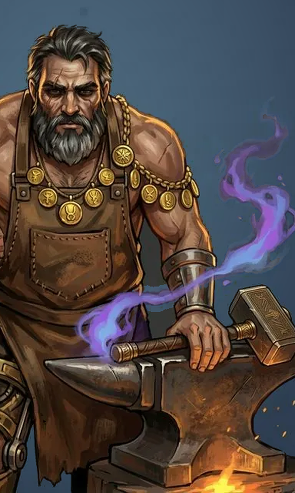
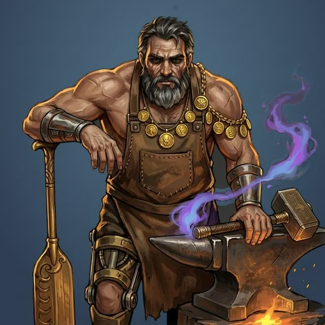
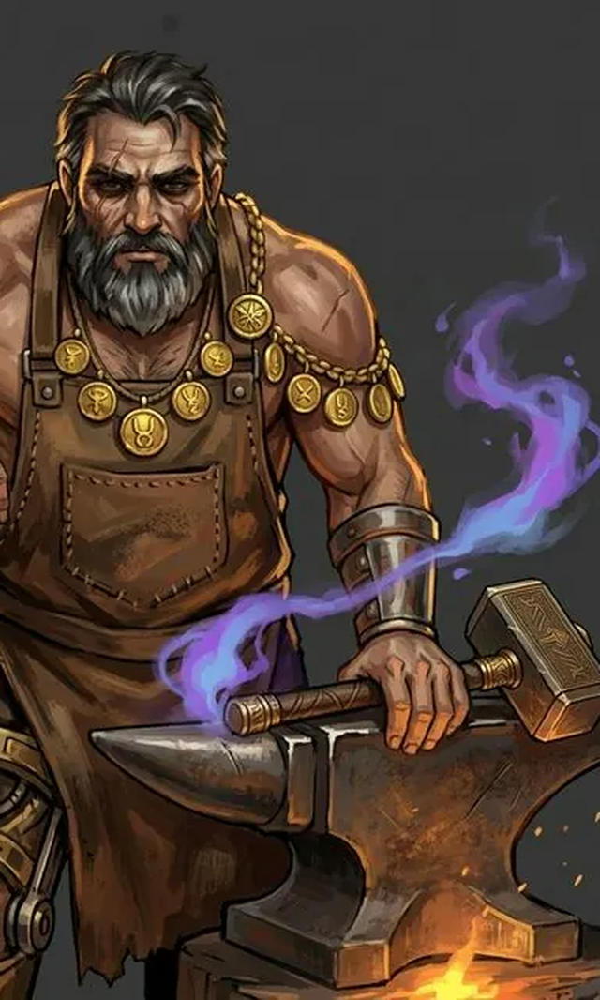

Heph idle loop: still vs loop
Each row plays the still beside its seamless loop. Tall rows are the 3:5 card column (face in the upper fifth, smoke and forge in frame). Measured numbers are in README.md.
Recommended: take 1, lit in post (tall 3:5)
2.58 s loop, breathing 0.62% of width, one blink at the loop point (eyes shut about 0.33 s). AJ liked take 1 live.

Alternative: take 4, prompt v2, lit still (tall 3:5)
3.50 s loop, breathing 1.56%, one blink with the eyes shut about 0.6 s.
Take 1 lit (square)
Same loop as the first row, square crop.

Take 4 (square)
Same loop as the second row, square crop.
Take 1 as generated, original lighting (tall 3:5)
The take AJ watched, before the lighting pass.
